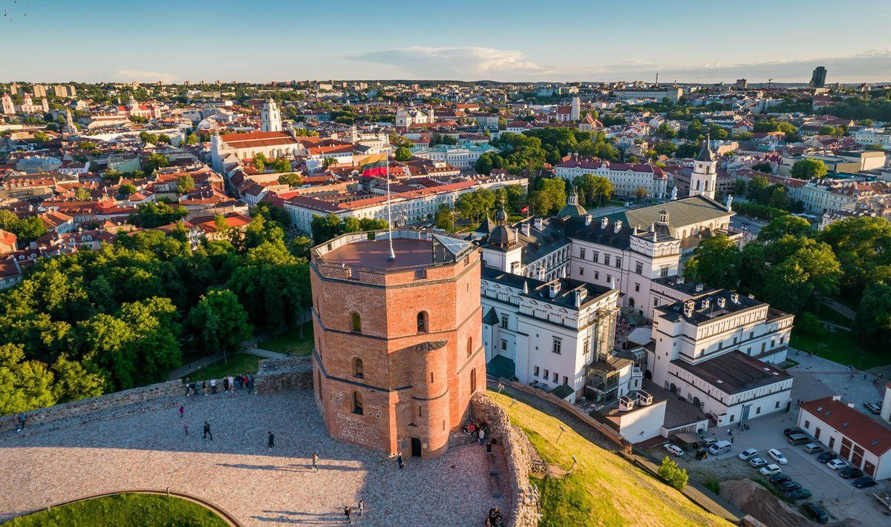

История
Без знания истории Литвы невозможно понять не только становление соседних государств, но и Европу вообще. Термин "Литва" впервые...
ПодробнееДалеко не каждый житель земного шара слышал про маленькую страну у далёкого моря, но, оказавшись здесь однажды, не забудет её никогда! Литва - это уникальная природа, история, культура и, кончно же, люди. Этот сайт позволит тебе, дорогой читатель, ближе познакмиться с очаровательной Балтийской республикой, доброжелательной к любому путешественнику - реальному или виртуальному.
Без знания истории Литвы невозможно понять не только становление соседних государств, но и Европу вообще. Термин "Литва" впервые...
ПодробнееДискуссии о генезисе литовского языка не утехают по сей день. Насколько он, и балтийские языки вообще, родственны славянским?
Насколько правомерно считать его наиболее близким к праиндоевропейскому? Одно можно сказать точно...
Литва это только красиво и увлекательно, это ещё и вкусно! Короритность и калорийность - два столпа литовской кухни. Отведав цеппелин, холодного борща...
Подробнее
Литву порадил ледник. Рельеф, русла рек, очертания озёр и даже балтийское море - всё это было "очертано" тоннами отсупающего льда. Около...
Подробнее